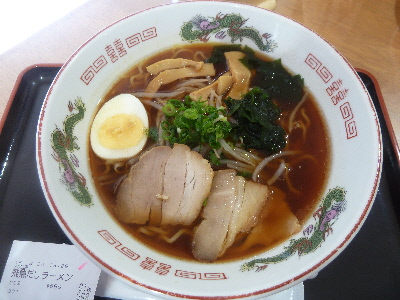
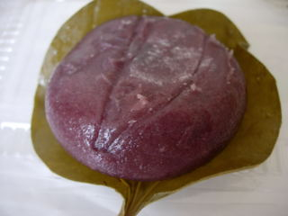
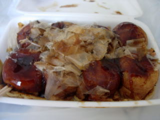
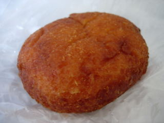

道の駅「さくらの里きすき」で飛魚ダシラーメンを食べました。
更新日 : 2018/03/24

見た目、普通に醤油ラーメンですね。
醤油の色が濃いので醤油味が濃いかな？って思ったんですが、スッキリとした醤油味でした。
飛魚ダシラーメンなので魚粉っぽい感じを想像したんですが、飛魚のいいところでダシを取っているようで、雑味がなく上品な味で美味しかったです。
ラーメン専門店じゃないですが、美味しいラーメンが食べれてよかったです。
島根県雲南市木次町山方1134-31
更新日 : 2018/03/24

見た目、普通に醤油ラーメンですね。
醤油の色が濃いので醤油味が濃いかな？って思ったんですが、スッキリとした醤油味でした。
飛魚ダシラーメンなので魚粉っぽい感じを想像したんですが、飛魚のいいところでダシを取っているようで、雑味がなく上品な味で美味しかったです。
ラーメン専門店じゃないですが、美味しいラーメンが食べれてよかったです。
更新日 : 2010/6/11

木次の道の駅の、産直市場で古代米入りかしわ餅を買いました。
古代米が入るとこんなに濃い色になっちゃうんですね。古代米自体の味はよく分からなかったんですが、ちょっと変わった商品でいいですね。
ちょっと硬めですが、お餅らしくもちもちとした食感が良かったです。
更新日 : 2010/6/11

道の駅でたこ焼きを買って食べました。道の駅ってこうゆうのが食べたくなりますよね。
生地がなんか独特な食感でした。なにか特別なものが入っているんでしょうか？ふんわりでもなく、ギュっと中身が詰まってる感じもなく、不思議な感じでした。

たこ焼きと同じところで売っていたカレーパンです。
コンガリしっかり油で揚がってます。カレー味はマイルドで、どちらかというと揚げパン味が強いパンでした。